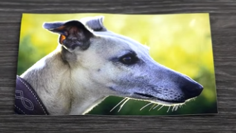
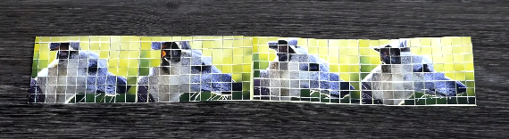
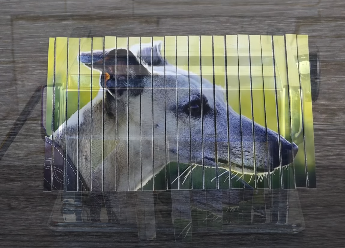
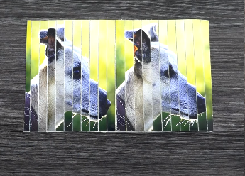

Você foi contratado para criar um app que realize digitalmente o efeito mostrado no primeiro experimento de https://youtu.be/M07JRzkgaR8.
Porém, antes de ficar milionário, empregando textos e imagens, estabeleça o modelo matemático necessário.

O experimento consiste em criar quatro imagens menores com partes da maior, tal que essas quatro imagens sejam bastante semelhantes à original.
O exemplo do vídeo foi feito com a imagem acima, resultando na colagem abaixo.

Para fins de análise matemática, é possível considerar a foto uma matriz m por n, tal que m e n sejam dois números naturais divisíveis por dois.
Em um primeiro momento, as n colunas são divididas em dois grupos: as colunas de índice j ímpar e de j par. A seguir, as duas novas matrizes são postas lado a lado - como se pode ver nas imagens abaixo, gerando uma nova matriz de mesmo tamanho m por n.
Outra forma de interpretar o que foi feito é dizer que as colunas foram reordenadas: primeiro ficam as colunas cujo indíce dividido por 2 deixa resto 1, em ordem crescente, e então as demais colunas também em ordem crescente de indíce.


Por fim, é feito um processo análogo com as m linhas da matriz reordenada, utilizando o índice i das linhas.